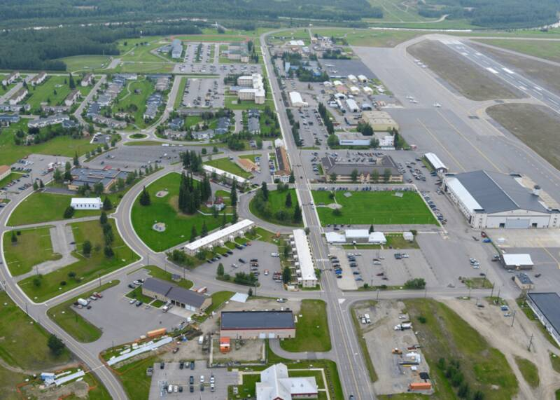

Fort Wainwright Alaska Alaska · Military base · 64.828°N, 147.644°W Fort Wainwright's main post from the air. Photo: U.S. Army, Public domain (source) Army post in Fairbanks. 1 Open in the interactive Watcher Sources Fort Wainwright Wikipedia